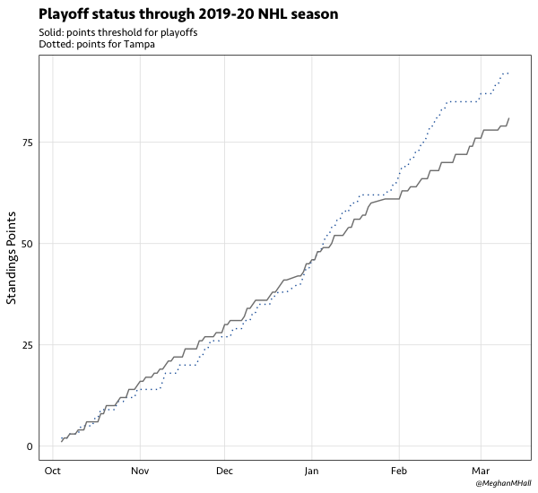
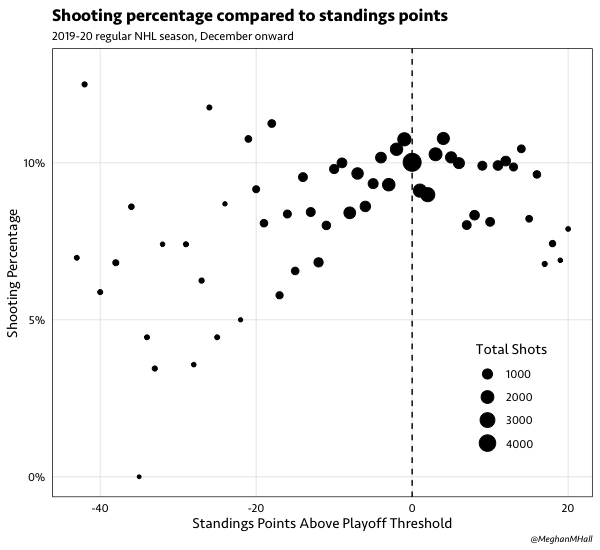

One of the major sticking points for many people learning R—especially for people without a lot of prior programming experience—is user-defined functions. This was certainly true for me, and I know I still don’t use them as often as I should! There’s confusion around how they work, both conceptually and in practice, as well as why they’re actually useful and when they’re applicable.
I find it most useful to see full examples that clearly delineate why a user-defined function is necessary for a particular use case, how to construct the function, and how to apply it. That’s what I’m hoping to share today with this example about NHL standings points. I first wrote a version of this code earlier this year when I examined the state of goalie pulling in the NHL and wanted to know if teams were more aggressive in pulling their goalie when they were chasing a playoff spot (spoiler alert: they’re really not). But to be able to determine the playoff status of a team at the time of every game that they played, I quickly determined that I needed to write my own function.
Why functions?
One of the great things about R is that there are so many useful packages and functions out there that solve specific problems. So why would you bother writing your own?
Efficiency and automation
The golden rule is that if you’ve copied and pasted code more than twice, it’s probably time to write a function instead. It’s more efficient, and it means that when you have to make changes, you’re less likely to make a mistake because you’re only updating code in one place instead of several. There are lots of good examples in the R for Data Science book.
Applying code iteratively
Functions are also useful whenever you want to apply multiple segments of code to different segments of data. That is, you want to split your data into pieces, apply a function to each piece, and then put the pieces back together. This is the aspect that the following example focuses on, and to do so we’ll use basic tidyverse functions as well as a function from the purrr package (which is loaded as part of the core tidyverse set of packages).
# Basic syntax of creating a function
name_of_function <- function(needed_value) {
# all the code goes here
}
# Using a function (works just like any other!)
name_of_function(needed_value)Time for code
The data I’m starting with for this example is a csv file of play-by-play data, scraped with the Evolving Hockey R scraper, for the 2019-20 NHL season.
library(tidyverse)
season_19 <- read_csv("pbp_201920.csv")
# Remove unnecessary variables and filter to regular season only
season_19_R <- season_19 %>%
filter(session == "R") %>%
select(season, game_id, game_date, event_index, game_period, game_seconds,
event_type, event_team, home_team, away_team, home_score, away_score)There’s some data manipulation that needs to be done before the function can be used: the data, which in its original form has hundreds of observations per game, needs to be grouped by game to determine the score of the game and whether or not the game ended in regulation. Then the data needs to be pivoted (so that there’s two rows per game, one for each team), and variables need to be added to calculate points, wins, etc.
# Group by individual game and find the final score as well as the maximum
# value of game_period, which will indicate whether it was a regulation game
game <- season_19_R %>%
group_by(season, game_id, game_date, home_team, away_team) %>%
summarize(away_score = max(away_score),
home_score = max(home_score),
max_period = max(game_period))
# Rearrange data to be one row per team per game
team_game <- game %>%
# pivot the home and away values to get one row per team
pivot_longer(home_team:away_team,
names_to = c("home_away", ".value"),
names_pattern = "(.+)_(.+)") %>%
# calculate the points awarded (2 for a win, 1 for an OT/SO loss, 0 for a reg. loss)
# detail wins vs. regulation wins vs. regulation + OT wins for tie-breaking purposes
mutate(score = ifelse(home_away == "home", home_score, away_score),
opp_score = ifelse(home_away == "home", away_score, home_score),
points = case_when(score > opp_score ~ 2,
score < opp_score & max_period > 3 ~ 1,
TRUE ~ 0),
win = ifelse(points == 2, 1, 0),
reg_win = ifelse(points == 2 & max_period == 3, 1, 0),
reg_OT_win = ifelse(points == 2 & max_period <= 4, 1, 0),
division = case_when(team %in% c("BOS", "BUF", "DET", "FLA", "MTL",
"OTT", "T.B", "TOR") ~ "Atlantic",
team %in% c("PIT", "PHI", "WSH", "N.J", "NYI",
"NYR", "CBJ", "CAR") ~ "Metro",
team %in% c("NSH", "CHI", "STL", "WPG", "COL",
"DAL", "MIN") ~ "Central",
team %in% c("ARI", "L.A", "ANA", "S.J", "VAN",
"EDM", "CGY", "VGK") ~ "Pacific"),
conference = ifelse(division %in% c("Atlantic", "Metro"), "East", "West"),
game = 1) %>%
select(-c(home_score, away_score, home_away, max_period)) %>%
group_by(team) %>%
# calculate the running counts for points, wins, reg. wins, reg. + OT wins, and games
mutate(points_running = cumsum(points),
wins_running = cumsum(win),
RW_running = cumsum(reg_win),
ROW_running = cumsum(reg_OT_win),
game_count = cumsum(game))
The data structure now in the team_game data frame has one row per team-game, with the results and points from that game as well as a running sum of points and wins up until that date. So we know how many points each team has at the time of each game, but to determine their playoff spot status, we of course need to know how many points they have compared to the other teams in their division and their conference. This is where the function comes in!
When you’re constructing a function with multiple parts, it’s often easier to write it as “normal” code first, just with a selected input. So in this case, let’s say we want to know the playoff status of each team as of December 1. We’d start with our team_game data frame and filter to only games that are before that date. Then we’d need to find the maximum points for each team (i.e., the points they’d have on December 1), take care of our tie-breakers, and determine how the teams are ranked within their division and their conference. Next, we could figure out who the wild card teams are and then what the points threshold is in each conference to have a playoff spot (e.g., on December 1, a team would need to have 30 points to be in a playoff spot in the Eastern Conference).
But of course, we want to know the playoff status of each team as of every day, not just December 1. To do that, we’d put all the code we wrote into a function and create an input for that first step of filtering our team_game data frame. In the function below, that input, which is the one argument in function(), is called simply date, and it’s used in the third line within the function, filter(game_date < date).
# Run the function to get the values for each game date
standings_points <- function(date) {
division <- team_game %>%
# this will filter to all the games before the selected standings date
filter(game_date < date) %>%
group_by(conference, division, team) %>%
# find the max points, wins, etc. as of that date
summarize(points = max(points_running),
games = max(game_count),
RW = max(RW_running),
ROW = max(ROW_running),
wins = max(wins_running)) %>%
# sort to take care of the tie-breakers
arrange(desc(points), games, desc(RW), desc(ROW), desc(wins)) %>%
# find each team's rank within their division
mutate(div_rank = row_number()) %>%
group_by(conference) %>%
# find each team's rank within the conference
mutate(conf_rank = row_number(),
div_top3 = ifelse(div_rank < 4, 1, 0),
standings_date = date)
wildcard <- division %>%
# filter to teams that are not automatically in the playoffs
filter(div_top3 == 0) %>%
group_by(conference) %>%
# find the rank of the remaining teams and determine which two are wild card teams
mutate(conf_rank_new = row_number(),
wild_card = ifelse(conf_rank_new < 3, 1, 0)) %>%
filter(wild_card == 1) %>%
ungroup()
playoff_spot <- division %>%
# join back in the wild card data
left_join(select(wildcard, team, wild_card), by = "team") %>%
# determine which teams are in a playoff spot
mutate(playoff_spot = ifelse(div_top3 == 1 | !(is.na(wild_card)), 1, 0))
threshold <- playoff_spot %>%
# filter to playoff teams only at that time
filter(playoff_spot == 1) %>%
group_by(conference) %>%
# find the points threshold
summarize(pts_threshold = min(points))
playoff_spot <- playoff_spot %>%
# join back in the threshold data
left_join(threshold, by = "conference")
}
# Use the map_df function to apply to function to each unique value of game_date
standings_data <- map_df(unique(team_game$game_date), standings_points)
That last line of code above uses the map_df() function from the purrr package to apply the function iteratively. The second argument of map_df() is the name of our new function, standings_points, while the first argument is the input to the function (what’s referred to as date within the user-defined function code itself). We’re telling R to apply that function many times, with the inputs being each unique value of game_date from our team_game data frame that serves as the starting point of the function. map_df collects all the data from running the function many times and puts it into the resulting standings_data data frame, which has a row per team per date with their own results (from the team_game data frame) as well as all the variables created with the function (div_rank, conf_rank, playoff_spot, pts_threshold, etc.)
What can be done with this?
Having data in this format allows us to do more analysis with our new standings-related variables, and the two simple examples below use the pts_threshold variable (the number of standings points that would result in a playoff spot in each conference, on each given day).
We could select a particular team and look at how their accumulation of standings points throughout the season compares to the playoff threshold.

# Example 1: graph progress through season compared to playoff threshold
graph <- standings_data %>%
ungroup() %>%
select(team, standings_date, points, pts_threshold) %>%
pivot_longer(points:pts_threshold)
graph %>%
filter(team == "T.B") %>%
ggplot(aes(x = standings_date, y = value, group = name)) +
geom_line(aes(linetype = name, color = name)) +
scale_linetype_manual(values = c("dotted", "solid")) +
scale_color_manual(values = c("#2364AA", "#808080")) +
labs(title = "Playoff status through 2019-20 NHL season",
subtitle = "Solid: points threshold for playoffs\nDotted: points for Tampa",
caption = "@MeghanMHall") +
ylab("Standings Points") +
meg_theme() +
theme(legend.position = "none",
axis.title.x = element_blank())We could also go back to our original play-by-play data and join in observations from our function result—here, the playoff threshold—so that we can compare measures by that metric. For example, we could look at the relationship between shooting percentage (the percentage of shots on goal that are goals) and standings points above the playoff threshold.

# Example 2: shooting percentage by standings points
season_19_sh <- season_19_R %>%
# filter to shot on goal events only, excluding shootouts
filter(event_type %in% c("SHOT", "GOAL") &
game_period < 5) %>%
select(game_id, game_date, event_type, event_team) %>%
mutate(shot = 1,
goal = ifelse(event_type == "GOAL", 1, 0))
sh_points <- season_19_sh %>%
# filter out October and November games
filter(!(lubridate::month(game_date) %in% c(10,11))) %>%
# join in our threshold data
left_join(standings_data %>%
ungroup %>%
select(team, points, pts_threshold, standings_date),
by = c("event_team" = "team",
"game_date" = "standings_date")) %>%
# find our variable of interest: standings points above the playoff threshold
mutate(threshold_diff = points - pts_threshold) %>%
group_by(threshold_diff) %>%
summarize(shots = sum(shot),
goals = sum(goal),
sh_perc = goals / shots)
sh_points %>%
ggplot(aes(x = threshold_diff, y = sh_perc)) +
geom_point(aes(size = shots)) +
labs(title = "Shooting percentage compared to standings points",
subtitle = "2019-20 regular NHL season, December onward",
caption = "@MeghanMHall",
size = "Total Shots") +
ylab("Shooting Percentage") +
xlab("Standings Points Above Playoff Threshold") +
scale_y_continuous(labels = scales::percent_format(accuracy = 1), limits = c(0, 0.13)) +
geom_vline(xintercept = 0, linetype="dashed") +
meg_theme() +
theme(legend.position = c(0.85, 0.22))Hopefully this showed you a concrete example of when it’s helpful to use a user-defined function iteratively, how to construct it, and how to apply it. If you’d like practice following this process, I have a sample play-by-play data set in my betweenthepipes package, and during a recent workshop, I went through a different example using this process with that sample data set. Those slides are available here.